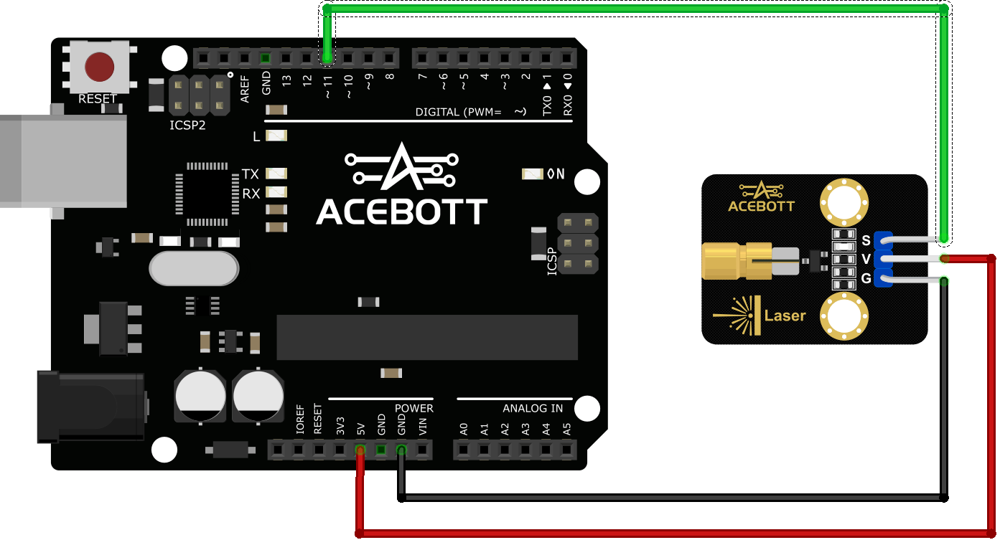
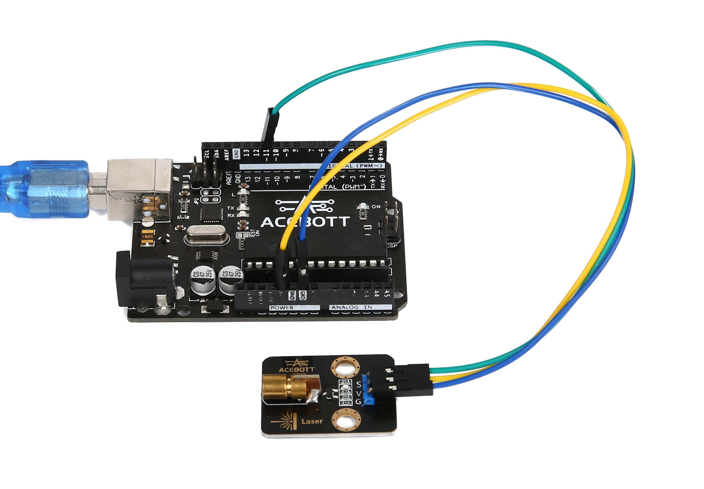

Laser Module¶
一、Product Introduction
{kind=link}
The laser module is composed of a 650nm red laser diode head, driving circuit and three male pins, whose role is to generate a red dot shaped laser beam. It should be noted that the laser has powerful energy and highly concentrated beam, laser beam will cause damage to the human eye, do not directly illuminate the laser eyes.
Application reference: This module can be used in laser alarm, laser sight, smart home, etc.
二、Parameter Specification
| Parameter | Value/Representation |
|---|---|
| Operating voltage | 3.3V~5V |
| Light spot pattern | Red light dot |
| Wavelength of light source | 650nm |
| power | 5mW |
| output signal | Digital signal /PWM signal |
| Size | 3.16cm*2.38cm |
三、Wiring Diagram

四、Sample Program
1 2 3 4 5 6 7 8 9 10 | //www.acebott.com
void setup(){
pinMode(11, OUTPUT); // Set pin 11 as an output pin
}
void loop(){
digitalWrite(11, HIGH); // Turn on the Laser Module connected to pin 11
delay(1000); // Wait for 1 second
digitalWrite(11, LOW); // Turn off the Laser Module connected to pin 11
delay(1000); // Wait for 1 second
}
|
五、Test Result
When you have successfully connected the line according to the wiring diagram and successfully uploaded the correct program, your laser module will light up and blink.

提示
After the laser module is lit, do not direct eyes.
六、Related Resources